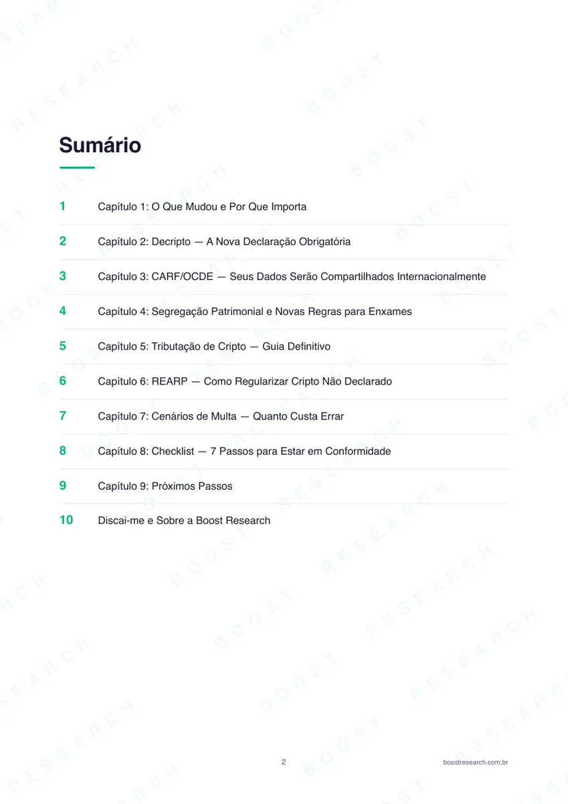
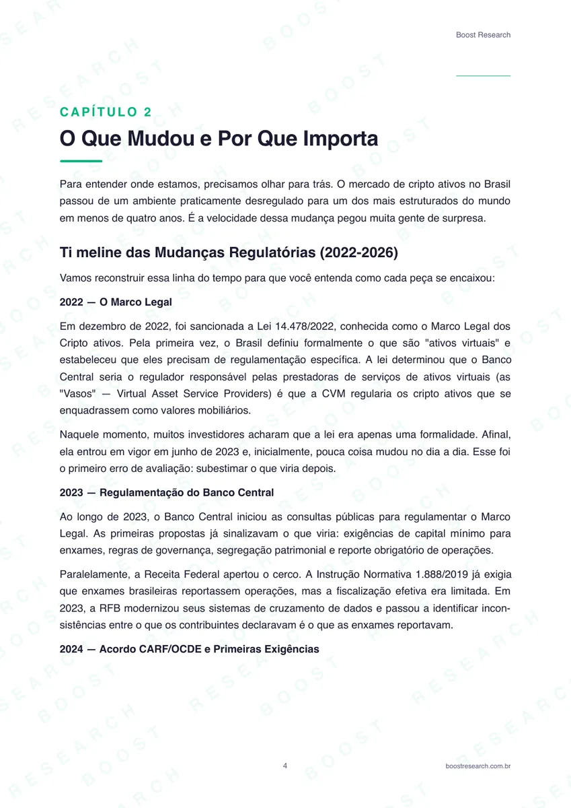

Construindo uma operação de aquisição full-funnel.
O trabalho foi além da compra de mídia: landing pages, qualificação, CRM, creative testing, tracking server-side e leitura de performance foram conectados para melhorar volume e qualidade de lead.
Performance com uma exigência extra: qualidade.
Em produtos financeiros de alto ticket, um CPL baixo pode esconder um problema de qualidade. A operação precisava combinar volume, qualificação por perfil e patrimônio, compliance e mensuração até o comercial.

Do anúncio ao lead qualificado.
A aquisição foi tratada como um sistema: mídia gera atenção; ativos de conversão coletam contexto; CRM organiza o lead; mensuração devolve sinal para otimização.
GTM, GA4, Meta Pixel, sGTM/CAPI, webhooks, Cloudflare Workers, RD Station e eventos próprios no dataLayer.
Volume e qualidade não eram a mesma coisa.
Mais qualificação via landing page
Em março, a LP qualificava 52% dos leads contra 16% no formulário nativo. O custo do lead isolado deixou de ser suficiente para decidir alocação.
O lead mais barato nem sempre é o melhor lead.
A decisão passou a considerar custo, contexto capturado e capacidade do comercial de agir sobre aquele lead.
O gargalo também estava na experiência da página.
Uma imagem de aproximadamente 15 MB fazia a landing page passar de cinco segundos em conexão móvel. A otimização reduziu drasticamente o peso do arquivo e levou o PageSpeed de 63 para 96.
Não adianta otimizar anúncio se a página derruba a conversão.
O CTR estava acima da meta. O problema precisava ser atacado fora do gerenciador de anúncios.
Urgência real + baixa fricção + mensagem concreta.
A campanha de IR Cripto usou um deadline real e uma entrega simples — e-book gratuito — para reduzir fricção. Em março, gerou 28 leads a CPL de R$11; o melhor criativo chegou a R$3,50 e CTR de 4,23%.


Mais do que uma campanha: uma infraestrutura de Growth.
O valor do projeto está na combinação entre aquisição, qualidade de lead e mensuração. Os números abaixo pertencem a recortes distintos e permanecem separados para não criar uma narrativa artificial.